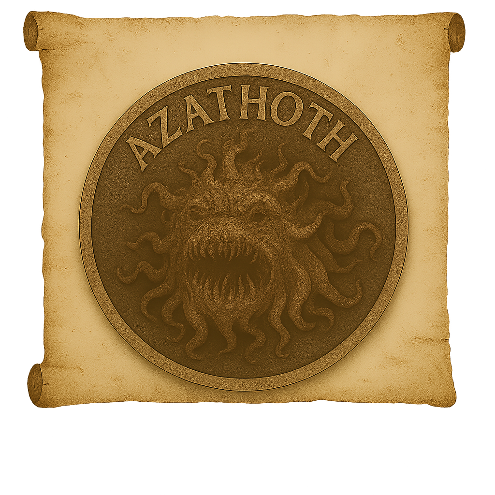

References
Insignia 04
Find more information about your Insignia, on your Insignias
PAGE 04 / 06 / 1938
Description
Azathoth is the blind, mindless nucleus of ultimate entropy—an Outer God of primordial anarchy whose very essence is pure, undirected chaos. At the heart of infinite night, He churns in ceaseless, formless convulsion, attended by ceaseless piping of demonic flutes and the mad rhythms of cosmic drums. No thought guides Him, no purpose constrains Him: He is the raw furnace from which reality is forged and to which it must inevitably return. Mortal minds cannot comprehend His true shape, for it lies beyond geometry and sense; glimpses manifest only as roiling clouds of incandescent vapors, amorphous tendrils of void, or the delirious sparkle of uncountable suns collapsing at once. Azathoth is neither summoned nor worshipped—He simply is. All worlds, all dreams, all life radiate outward from His pinnacles of frigidity, and when His silent laughter throbs, galaxies tremble.
“All gods, all horrors, must bow to Him whose lack of purpose spawned the universe.” — Fragmented note, Pnakotic Manuscripts
Clasification
- Class: Outer Deities
- Threat Level: Universal Nihilism / Existential Unravelling
- Contact Risk: Cosmic Insanity / Erasure of Self
- Presence Detected:Unnatural auroras, random temporal dislocations, spontaneous collapse of physical law in isolated locales
Scholar’s Record – Archivist In’thur-Zul
“In the emptiest hour before dawn, the sky rent asunder. From the rift poured a white fire that made no heat, and I heard at once the piping of a thousand flutes—each note more dissonant than the last. My mind shattered, my bones liquefied, and yet I lived to write this: Azathoth stirs, and for a heartbeat, existence itself trembled.”
Investigator Advisory
- Do not stare at cosmic anomalies such as starless void patches or suns that flicker out of swing.
- If you hear faint, otherworldly piping or percussion in your mind, seal your ears and retreat indoors.
- Avoid inspecting any tome older than humanity’s oldest ruins, especially those bound in star-metal or void-skull.
- First sign of proximity: spontaneous lapses in time perception and déjà vu of impossible aeons.
- Second sign: voices whispering in dreamless sleep, urging you to “listen at the center.”
Supplemental Notes
Occult sects claim that Azathoth existed before Thought and will endure after all thought ends. Some cryptic texts suggest that the piping minions seated around Him are in fact mortals suspended in ageless trance, their souls bound to eternal musical torment. Other scholars posit that every act of creation—every particle, every wave—emanates as an involuntary tremor from His ceaseless turmoil.
Warning: This dossier was salvaged from the ruins of an obsidian observatory on Obsidian Isle. Prior researchers were found in catatonic states, murmuring fragments of impossible symphonies. Exposure to these records may induce amorphous hallucinations, temporal incoherence, or spontaneous dissolution of identity. Under no circumstances read aloud near open skies.